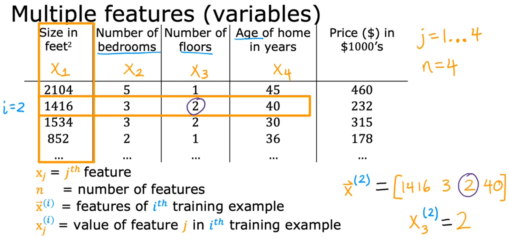
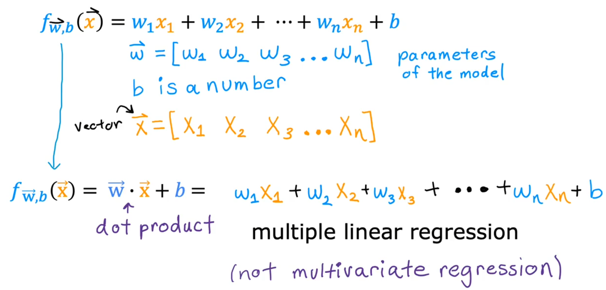

多元线性回归模型


多元假设函数
\(m\) ：表示训练样本的数量, 即有多少行
\(n\) ：表示每个样本的特征数据, 即几有多少列
\(\vec{x}^{(i)}\)：第 \(i\) 个训练样本的所有特征
\(x_j^{(i)}\)：第 \(i\) 个训练样本的特征 \(j\) 的值
则多项式的假设函数为：
\[f_{w,b}(x) = w_1 x_1 + w_2 x_2 + w_3 x_3 + ... + w_n x_n + b \]
用向量表示法, 上式可以简写为：
\[f_{\vec{w},b}(\vec{x}) =
[w_1 w_2 ... w_n ]
\left[\begin{matrix} x_0 \\\ x_1 \\\ ...\\\ x_n \end{matrix}\right] + b
= \vec{w} \cdot \vec{x} + b \]
多元损失函数
\[
J_{\vec{w},b} = \frac{1}{2m}\sum_{i=1}^m\bigl(f_{\vec{w},b}(\vec{x}^{(i)}\bigr)-y^{(i)}\bigr)^2\]
多元的梯度下降


\[\begin{align*}
\text{repeat} \ \{ \\
\quad w_j &= w_j - \alpha \frac{\partial}{\partial w_j} J(\vec{w}, b) \\
\quad b &= b - \alpha \frac{\partial}{\partial b} J(\vec{w}, b) \\
\}
\end{align*}\]
定义变量说明
给定 \(n\) 个特征（\(n \geq 2\)），使用梯度下降法迭代更新参数：
\[
\text{repeat} \left\{
\begin{aligned}
w_1 &:= w_1 - \alpha \cdot \frac{1}{m} \sum_{i=1}^{m} \left( f_{\bm{w}, b}(\bm{x}^{(i)}) - y^{(i)} \right) x_1^{(i)} \\
&\vdots \\
w_n &:= w_n - \alpha \cdot \frac{1}{m} \sum_{i=1}^{m} \left( f_{\bm{w}, b}(\bm{x}^{(i)}) - y^{(i)} \right) x_n^{(i)} \\
b &:= b - \alpha \cdot \frac{1}{m} \sum_{i=1}^{m} \left( f_{\bm{w}, b}(\bm{x}^{(i)}) - y^{(i)} \right)
\end{aligned}
\right.
\]
其中，模型的预测函数为：
\[
f_{\bm{w}, b}(\bm{x}) = \bm{w}^\top \bm{x} + b
\]
每次迭代同时更新所有参数 \(w_j \ (j = 1,\dots,n)\) 和偏置 \(b\)。
实践中的梯度下降 - 特征缩放
可以通过使每个输入值在大致相同的范围内来加速梯度下降。这是因为梯度在小范围内下降快，而在大范围内下降较慢；另外，对于不平整的变量，梯度在下降至最优值的过程中会出现降低效率的震荡。
因此将特征缩放（feature scaling）和均值归一化（mean normalization）两种技术结合使用。特征缩放将输入值除以输入变量的范围（即最大值减去最小值），从而得到一个大小为 1 的新范围；均值归一化涉及从输入变量的值减去输入变量的平均值，从而导致输入变量的新平均值为 0。公式为：
\[x\_i := \frac{x\_i - \mu\_i}{s\_i}\]
其中，\(\mu\_i\) 是特征 \(i\) 所有值的平均值，\(s\_i\) 是特征 \(i\) 的范围（最大值减最小值）。
实践中的梯度下降 - 学习率
当学习率 \(\alpha\) 太小，则梯度下降太慢；而当学习率 \(\alpha\) 太大，则梯度可能不会下降，也因此不会收敛。因此有时需要观察并进行调整。
参数计算
正规方程
梯度下降是最小化 \(J\) 的一种方法。第二种方法是正规方程（Normal Equation），它显式地执行最小化，而不使用迭代式的算法。
\[\theta = (X^TX)^{-1}X^Ty\]
正规方程方法中，无需做特征缩放。两种方法的对比如下：
| 梯度下降 |
正规方程 |
| 需要选择学习率 |
不需要选择学习率 |
| 需要多次迭代 |
不需要迭代 |
| \(O(kn^2)\) |
\(O(n^3)\)，需要计算 \((X^TX)^{-1}\) |
| 当 n 较大时效果很好 |
当 n 较大时速度较慢 |
不过正规方程方法要求 \(X^TX\) 可逆。\(X^TX\) 不可逆的原因有两种可能：
- 列向量线性相关：即训练集中存在冗余特征（特征线性依赖），此时应该剔除掉多余特征；
- 特征过多（多于样本数量）：此时应该去掉影响较小的特征，或引入正则化（regularization）项。
正规方程的推导过程
把数据集表示为矩阵
\[X = \left( \begin{matrix} x\_{11} & x\_{12} & \cdots & x\_{1d} & 1 \\\ x\_{21} & x\_{22} & \cdots & x\_{2d} & 1 \\\ \vdots & \vdots & \ddots & \vdots & \vdots \\\ x\_{m1} & x\_{m2} & \cdots & x\_{md} & 1 \\\ \end{matrix} \right) = \left( \begin{matrix} x\_{1}^T & 1 \\\ x\_{2}^T & 1 \\\ \vdots & \vdots \\\ x\_{m}^T & 1 \\\ \end{matrix} \right)\]
同时将标签也写成向量形式
\[y = (y\_1;y\_2;...;y\_m)\]
由均方误差最小化，可得
\[\theta^* = arg\_{\theta}min(y-X\theta)^T(y-X\theta)\]
其中，\(\theta^*\)表示 \(\theta\) 的解。
令
\[E\_{\theta} = (y-X\theta)^T(y-X\theta)\]
对 \(\theta\) 求导得到
\[
\begin{equation}
\begin{split}
\frac{\partial E\_{\theta}}{\partial \theta}&=-X^T(y-X\theta) + (y^T - \theta^TX^T) \cdot (-X)\\\
&=2X^T(X\theta - y)
\end{split}
\end{equation}
\]
令上式为 0，有
\[2X^T(X\theta - y) = 0\]
\[X^TX\theta = X^Ty\]
最终得到
\[\theta = (X^TX)^{-1}X^Ty\]
当 \(X^TX\) 不为满秩矩阵（不可逆）时，可解出多个 \(\theta\) 使均方误差最小化。因此将由学习算法的归纳偏好来决定选择哪一个解作为输出，常见的做法就是引入正则化项。